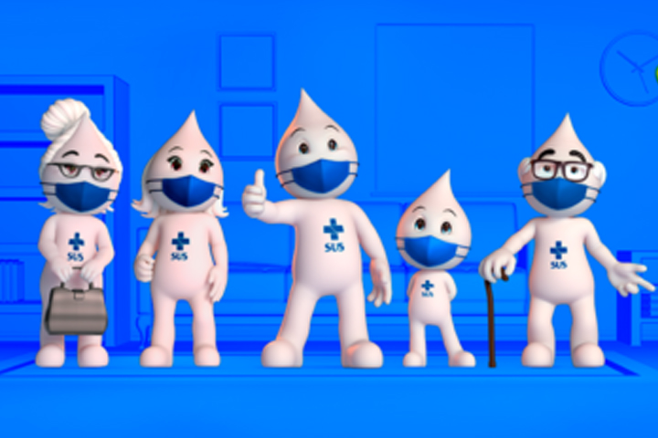
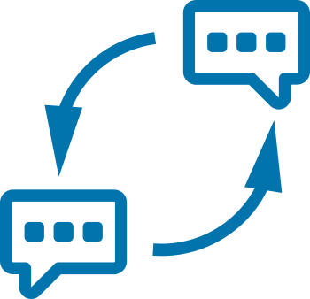
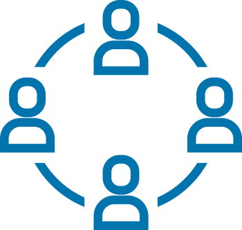

Módulo 5 | Aula 2 Autocuidado no âmbito profissional
Comunicação em saúde e na saúde

Como já visto anteriormente, a comunicação em saúde constitui um processo de acesso e construção de conhecimentos em saúde, que visa compreensão e a aplicabilidade na vida sobre o tema pela população em geral na perspectiva da Literacia para a Saúde. Esse conhecimento ajudará na compreensão dos conceitos técnicos em saúde, sua aplicabilidade para comunicação na saúde, a fim de aprimorar o diálogo entre os profissionais e alcançar uma atenção à saúde de acordo com as necessidades da comunidade.
A habilidade de comunicação envolve fatores do contexto pessoal, cultural e social e exige um processo de educação permanente em saúde para troca de saberes e ampliação da LS nas equipes de saúde. Desse modo, uma comunicação efetiva se processa por meio da escuta ativa de um interlocutor para seu colega que irá atentar para as nuances do saber do outro, das suas formas de pensar e juntos aprimorarem os aprendizados para uma nova relação se estabelecer.
Profissionais que se reúnem para planejar um projeto terapêutico singular, discutem fatores de risco comuns, ciclos de vida distintos e contextos diversos às suas áreas e planejam ações coordenadas na APS. Com essa forma de interação comunicativa é possível, por exemplo, abordar as principais doenças crônicas não transmissíveis agregadas na perspectiva da promoção da saúde. Soma-se a essa visão o conceito da salutogênese, a qual desvela os recursos positivos para a saúde e as estratégias adotadas para as pessoas se manterem saudáveis, contribuindo para o bem-estar, a qualidade de vida e a sua conscientização. (MARÇAL, et al., 2018)
Para estabelecer um clima de trabalho organizacional favorável os profissionais precisam estar em sintonia com seus propósitos e motivados. Veja algumas formas de realizar a manutenção do clima organizacional.

Boa comunicaçãoCom uma boa comunicação há melhoras no desempenho das atividades das unidades de saúde e um bom clima organizacional.
Quanto maior a motivação, mais positivo será o clima e melhor a convivência no ambiente profissional.

Trabalho em equipeO clima organizacional remete ao trabalho em equipe, pois envolve a colaboração entre os membros de uma mesma equipe na busca de um objetivo comum.
O conhecimento de cada um é agregado por meio de vários conhecimentos específicos na busca por construir um consenso empoderado.
A ocorrência de conflitos interpessoais, inerentes ao contexto do convívio em grupo, são os principais motivos de o trabalho em equipe não se concretizar, por estarem associados ao individualismo, falta de cooperação, falta de respeito às diferenças, falta de comprometimento e corresponsabilização, gerando a ocorrência de falsas equipes, com baixa integração entre os seus membros, que só possuem o nome de equipe nas ESFs, porém existem conflitos éticos e isolamento das atribuições de profissionais distintos e não ocorre dessa forma a abordagem interprofissional esperada. (PERUZZO, et al.019)
Podemos avaliar o ambiente por meio de alguns pontos-chaves: satisfação com o cargo ocupado, treinamento oferecido pela instituição, condições físicas no ambiente de trabalho (espaço, higiene e limpeza), equipamentos adequados, jornada de trabalho, sentimento de realização profissional, capacidade profissional utilizada adequadamente, satisfação com o salário. (BERNARDES, 2020, p. 35)
Para a comunicação na saúde ser efetiva, é necessário um conjunto de ações que visam a escuta, a informação e a mobilização nos ambientes de trabalho, para haver um processo educativo interno com coesão de valores reconhecidos e compartilhados entre as equipes de saúde. Assim, todos podem contribuir para a construção de uma relação de trabalho saudável, que reflita na qualidade dos serviços da saúde pública. (CURVELLO, 2012, p. 22)
Quais dos seguintes atributos são considerados para avaliar a comunicação na saúde e o clima na sua equipe de saúde? Fica a pergunta: o que vem pela frente? O que podemos esperar agora na promoção da saúde e novas tecnologias, depois do movimento acelerado pela pandemia?